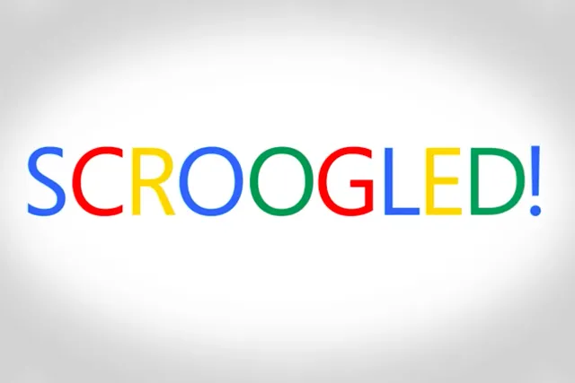

谷歌和微软工程师可能会在 Chromium 浏览器项目开发上进行合作，但这并没有消除双方之间的企业政治斗争。今天谷歌对微软发起了严厉的攻击，指责它试图 “打破开放 web 的运作方式，以此来削弱竞争对手"。
谷歌对微软破坏其支持新闻业和出版商努力的攻击感到不满。今年一月，谷歌威胁要将其搜索引擎服务从澳大利亚撤走以回应一项法律（该法律一旦实行将迫使谷歌为新闻出版商的内容付费）。就在谷歌屈服并与 News Corp. 和其他出版商达成协议，确保其服务能够继续在澳大利亚提供之后几天，澳大利亚于 2 月通过了这项法律。（另一方面，Facebook 确实取消了用户和出版商在澳内分享新闻内容的功能，这也 赢得了澳大利亚政府的一些让步。）
在这中间，微软非常公开地 表示支持澳大利亚的新法律，它甚至 与欧洲出版商联手 呼吁网络平台达成协议，为新闻机构的内容付费。谷歌对微软参与其中并不满意，这是自 Scroogled 时代 以来，我们看到的第一次大规模的公开争辩。
谷歌全球事务主管肯特·沃克（Kent Walker）在一篇博客文章中 说："他们现在提出了自私的要求，甚至不惜打破开放 web 的工作方式，以削弱竞争对手的实力"。"这次最新的攻击标志着微软惯用手法的回归。沃克在文中放上了维基百科上的"恐惧、不确定性和怀疑"（FUD）条目的链接，并指责微软混淆视听，以转移对最近安全问题的注意力。
沃克说：“微软这次的攻击并非巧合，而是有备而来。这发生在 SolarWinds 攻击之后，在他们允许他们的数万名客户被黑客通过微软的主要漏洞攻击的时刻。”沃克接着说：“微软收到了有关他们系统中存在的漏洞的警告，并且知道这些漏洞正在被黑客利用，现在正在做止损工作。而他们的客户正忙着从所谓的 “电子邮件大劫案” 事件中收拾残局。所以对于他们转移视线的老把戏，我们不必大惊小怪”

谷歌的这一不同寻常的攻击恰逢众议院司法委员会（House Judiciary Committee）研究自由和多元化新闻竞争的反垄断和商业方面的问题。谷歌认为它并没有从谷歌新闻中赚钱，但微软认为这要复杂得多，涉及到谷歌搜索广告、广告技术业务、广告交换、广告技术工具以及谷歌的整体消费者数据集。
微软总裁布拉德·史密斯（Brad Smith）表示：“新闻机构有广告库存要卖，但他们不能再直接卖给那些想投放广告的人。相反，出于客观原因，他们必须使用谷歌的工具，在谷歌的广告交易所上运营，为谷歌的运营贡献数据，并向谷歌支付资金。所有这一切都影响了新闻机构甚至从自己网站上的广告中获得经济利益的能力。”
在出版商是否应该对由搜索巨头和 Facebook 主导的数字广告行业拥有更多控制权的核心论点上，谷歌和微软显然存在分歧。微软希望国会推进《新闻竞争与保护法》来让新闻机构能够与在线内容发行商进行集体谈判。
而谷歌则认为，其试图与新闻行业合作的 谷歌新闻计划 足以帮助新闻机构。在微软和谷歌唇枪舌战的同时，众议院司法委员会今天召开会议，就数字时代新闻业的未来听取不那么尖锐的争论。
如果发现译文存在错误或其他需要改进的地方，欢迎到 掘金翻译计划 对译文进行修改并 PR，也可获得相应奖励积分。文章开头的 本文永久链接 即为本文在 GitHub 上的 MarkDown 链接。
掘金翻译计划 是一个翻译优质互联网技术文章的社区，文章来源为 掘金 上的英文分享文章。内容覆盖 Android、iOS、前端、后端、区块链、产品、设计、人工智能等领域，想要查看更多优质译文请持续关注 掘金翻译计划、官方微博、知乎专栏。